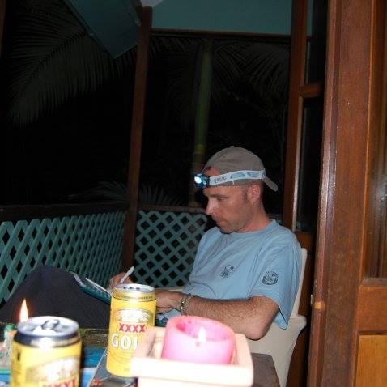

Todo sobre el tratamiento de la hipertensión: entrevista con un cardiólogo
Hipertensión es una de las enfermedades cardiovasculares más comunes.
17,5 millones17,5 millones de personas mueren cada año por enfermedades cardiovasculares. |
85%más del 85% de las muertes se deben a infartos y accidentes cerebrovasculares provocados por la hipertensión. |
95%Se puede prevenir el 95% de los infartos y accidentes cerebrovasculares prematuros. |
¿Por qué se desgastan los vasos? ¿Cómo reacciona el corazón a las experiencias negativas? ¿Cómo diagnosticar problemas cardiovasculares? ¿Por qué aparece la hipertensión en los jóvenes y cómo tratarla? Esto y mucho más fue revelado por un cardiólogo con 30 años de experiencia, el doctor en ciencias médicas Luis Barras.

- Hola, Luis. ¿Cuál es la edad promedia de las personas con presión arterial alta hoy?
- Hola. Cada año, la escala de edad de la incidencia disminuye. Hace cinco años, la edad promedia se podía considerar 40-45 años, hoy – 35.
- ¿Con qué se relaciona esto?
- Hipertensión se llama hoy "enfermedad del estilo de vida moderno". Esto se debe a factores clave que contribuyen al aumento de la presión: baja actividad física, exceso de peso corporal, consumo excesivo de sal.
- ¿Por qué aumenta la prevalencia de hipertensión con la edad?
- Se asocia con el desgaste y el envejecimiento de las paredes de los vasos. Las arterias se vuelven más rígidas, lo que empeora la función de relajación del músculo cardíaco. La hipertensión crónica deforma la pared delgada de los vasos cerebrales. Como resultado, se adelgaza por completo y en algún momento se rasga, o se deforma y engrosa, reduciendo la luz del vaso.
- ¿Qué es peligroso aumento de la presión?
- El aumento de la presión causa hipertrofia miocárdica del ventrículo izquierdo que conduce a insuficiencia cardíaca. Se forman placas ateroscleróticas en los vasos, debido a las cuales se puede desarrollar un infarto de miocardio o un accidente cerebrovascular. Además, debido al aumento de la PA, todos los órganos: el cerebro, el corazón, los riñones y las arterias se ven afectados.
- ¿Un accidente cerebrovascular y un infarto no amenaza a los jóvenes?
Es un error. El infarto y el accidente cerebrovascular afectan a todos y pueden ocurrir a cualquier edad (aunque, por supuesto, cuanto mayor sea, mayor será la probabilidad). Además, los hombres de mediana edad (40-50 años) mueren de accidente cerebrovascular una vez y media más a menudo que las mujeres. Y algunas variedades de accidente cerebrovascular ocurren con mayor frecuencia con hombres jóvenes (25-35 años) después de un fuerte aumento de la presión arterial.

- Además del aumento de la PA, ¿hay algún signo más que indique el desarrollo de la enfermedad?
- Hay cinco signos que las personas no asocian con la hipertensión:
- dolor de cabeza al despertar;
- vértigo;
- tinnitus;
- la aparición de puntos brillantes frente a los ojos;
- hemorragias nasales.
- ¿Es cierto que el estrés provoca una crisis (un fuerte aumento en la presión)?
- La crisis puede ser provocada no solo por el estrés, sino también por una tensión mental excesiva, una sobredosis de alcohol o drogas. Si siente un fuerte dolor de cabeza o náuseas y la piel está cubierta de manchas rojas, llame a una ambulancia. De lo contrario, el caso puede terminar en edema cerebral o accidente cerebrovascular.
- ¿Se puede curar la hipertensión?
- Hipertensión, como cualquier otra enfermedad, es mejor tratable en la etapa inicial. Especialmente vale la pena preocuparse por aquellas personas cuyos familiares han sufrido enfermedades del corazón; en la mayoría de los casos, la hipertensión se convierte en una enfermedad hereditaria. La terapia moderna incluye medicamentos que, a diferencia de los medicamentos obsoletos, no interrumpen el metabolismo de los carbohidratos, los lípidos y las purinas, no atrapan el líquido en el cuerpo, no deprimen la actividad del sistema nervioso central.
- ¿Serán muy caros?
- La mayoría de los medicamentos actuales para la hipertensión son, en promedio, un 80% más caros que sus predecesores. En la práctica, uso un medicamento natural de bajo costo y muy efectivo . Lo más importante que hay que decir de este medicamento – debe tomarse por un curso, no de por vida.

- ¿Cómo ayuda con la hipertensión?
- La composición de incluye bloqueadores naturales B e inhibidores que mejoran el funcionamiento del corazón y controlan que no se expulse demasiada sangre a los vasos. Dado que el exceso de suministro de sangre combinado con una disminución en el tono causa un aumento de la presión.
- ¿Cómo funciona el medicamento?
- Durante la ingesta de , el paciente está asegurado contra las fuertes fluctuaciones de presión en las horas nocturnas y matutinas. El medicamento alivia la carga del músculo cardíaco y mejora la circulación sanguínea, lo que permite reducir la incidencia de accidentes cerebrovasculares, que, como los infartos de miocardio, ocurren con mayor frecuencia en la madrugada. La presión arterial durante la noche se reduce en aproximadamente un 10% y el cuerpo responde con la liberación de hormonas catecolaminas que ayudan a mantener los niveles de presión. no solo diluye la sangre, sino que también actúa sobre los vasos obstruidos, limpiándolos y expandiéndolos. La contaminación vascular con colesterol es la principal causa de hipertensión.

- ¿La prescripción de depende de la edad del paciente y tiene limitaciones para la admisión?
- No. Se usa independientemente de la edad. Por lo general, la terapia para la hipertensión se prescribe individualmente. Antes de comenzar el tratamiento, se examina al paciente para determinar si hay cambios en el corazón, los riñones y las glándulas suprarrenales. Para una definición más precisa, la PA se mide en ambas manos. La hipertensión a menudo se acompaña de trastornos del tracto gastrointestinal, enfermedad coronaria, aterosclerosis. Una diferencia importante de es que no afecta el trabajo de los órganos. Su única contraindicación es la intolerancia individual a los componentes.
- ¿Cuándo el paciente sentirá mejoras con ?
- Un curso dura 28 días. Por supuesto, el resultado depende del grado de hipertensión, pero la tasa promedio de mejora del bienestar es de 3-7 días. la Presión disminuirá y, con ella, las migrañas, los mareos, el tinnitus, la meteorosensibilidad y el insomnio comenzarán a pasar.
- Es decir, ¿no solo reduce la presión?
- Funciona de manera integral:
- mejora la circulación sanguínea y el tono;
- limpia los vasos de las placas de colesterol;
- mejora la salud cardiovascular;
- inhibe el desarrollo de aterosclerosis.
- Muchas gracias por la entrevista. Mi última pregunta es: ¿dónde se puede comprar ?
- Gracias por la invitación. A mis pacientes les aconsejo que compren en el sitio web del fabricante. Esto protegerá de la compra de falsificaciones y le dará la oportunidad de obtener el medicamento a un precio de ganga.
Comentarios

Alberto
10.06.20
Mi madre siempre alivia la presión de emergencia, pero no
bebe nada para mantener el corazón funcionando. Espero que su entrevista la convenza.
Miriam
11.06.20
Con la presión, no hay bromas. Así que es mejor no
bajarla, sino tratarla.
Tomas Gallego Miranda
12.06.20
Me han pasado cosas. No podía trabajar normalmente y
vivir en general. Tomaba pastillas para la presión constantemente, comenzaron los problemas
hepáticos. Médico me recetó el remedio natural . Hice un curso
mensual y las crisis pasaron. La presión se normalizó (era 160-170 en 95-100), y ahora 130-120
en 80-85 estable, sin tomar ninguna pastilla más. Me siento muy bien, se han ido la fatiga y
la rotura eterna.

Silvia
13.06.20
Gracias por el excelente artículo! Todos los hipertensos
podrán leer y aprender algo nuevo en términos de tratamiento.

Laura
14.06.20
También tengo presión alta, hay que probarlo. Quiero
bajarla de una vez por todas!

Oscar Bermudez
15.06.20
No pude deshacerme de la hipertensión de una vez por
todas, pero logré estabilizar la presión, gracias al tratamiento adecuado. Es el gran mérito
de mi doctor! Me recetó el medicamento para bajar la presión arterial y limpiar los vasos – . Lo tomaba 2 veces al día, una pastilla. Hace seis meses que la
presión es normal, me siento bien. Todo está bien.

Alejandra
16.06.20
Eso es lo que he estado buscando tanto tiempo! Gracias.

Javier
17.06.20
Hay que comprar este remedio para mi madre, ella se toma
pastillas siempre, pero no ayudan nada.
Juana
18.06.20
Tengo hipertensión más de 40 años! Las pastillas me
mantienen más o menos, y si no me las tomo, entonces pronto podré ir al otro mundo.

Carlita
19.06.20
He estado viendo a un terapeuta con mi hipertensión
durante 20 años. Ahora tengo 58 años, así que es una experiencia muy grande. Siempre me tomo
varias pastillas para mantener la presión. Ayuda un poco, pero si no tomas una pastilla por la
mañana, la presión aumenta por la noche. Me aconsejaron a un buen médico, quien me recetó . Mi vida ha cambiado para mejor! La presión se normalizó, pasó la
pesadez, los dolores y el ruido en la cabeza, dejó de doler en el pecho. Incluso dormí bien,
aunque toda mi vida sufrí de insomnio. Nunca he creído en todo tipo de métodos y técnicas
médicas, excepto la convencional. Pero comencé el tratamiento con y me di cuenta de
que estaba equivocada y usaba medicamentos demasiado serios durante mucho tiempo. Si comenzara
el tratamiento correctamente de inmediato, no habría problemas renales. Pero lo principal es
que no hay problemas de presión en este momento. Estoy muy contenta.
¿Quieres dejar un mensaje?
Una máscara facial se prepara muy simplemente
El diseñador industrial Mark Sanders muestra su nuevo diseño.